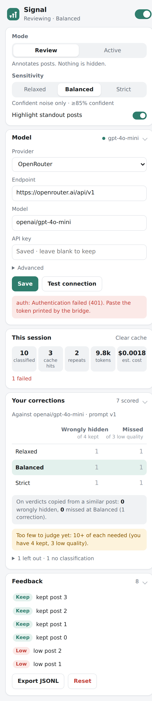
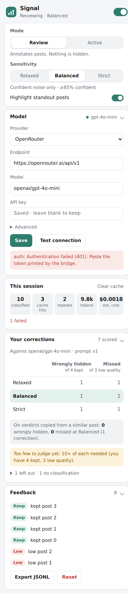
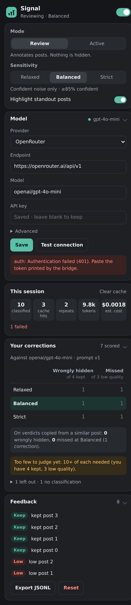
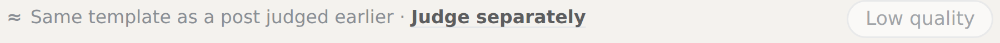
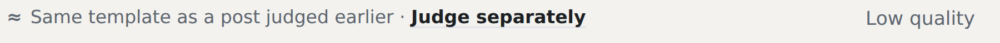
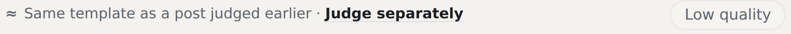
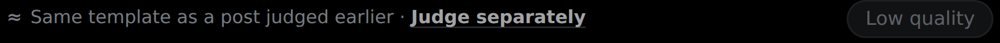
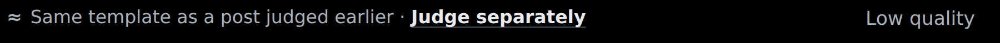
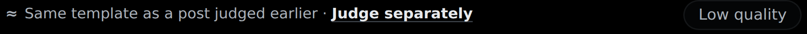

1 · Popup: every section open, few corrections (“too few” numbers), pills, error line · contrast failures, axe: light 20 → 0, dark 2 → 0 · own text scan: light 27 → 0, dark 8 → 0
BEFORE · light
AFTER · light
BEFORE · dark
2 · Feed, Review mode, quiet row (copied keep: note + “Low quality”), shown at 3× · contrast failures (axe and own scan): light 2 → 0, dark 1 → 0
BEFORE · light
AFTER · light
AFTER · light · hover/focus (border --neutral, 2.07:1 vs page)
BEFORE · dark
AFTER · dark
AFTER · dark · hover/focus (border --neutral, 4.58:1 vs page)